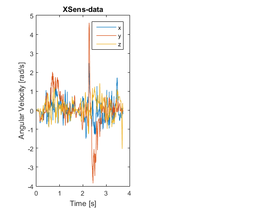
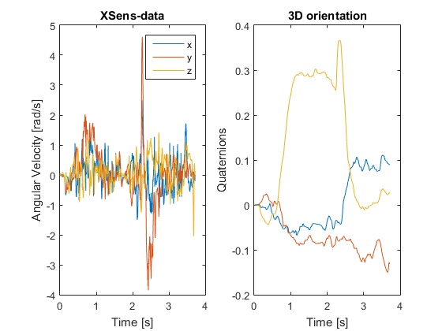
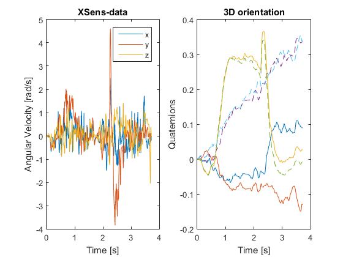

Contents
C6_examples_imu
Script demonstrating the data analysis from an XSens-IMU
% Ver 0.1 % author: ThH % date: Aug-2017
Read in the recorded data. Here a file from an XSens-system:
in_file = 'Kinematics\data\data_xsens.txt' data = get_Xsens(in_file, 256); % The easiest way to specify the approximate orientation is by indicating % the direction the x/y/z axes of the IMU are pointing at: initialOrientation = [1,0,0; 0,0,-1; 0,1,0]; initialPosition = [0,0,0];
in_file = Kinematics\data\data_xsens.txt
Example 1: extract the raw gyroscope data
gyr = data.omega; time = (1:data.totalSamples)/data.rate; % Plot it subplot(1,2,1); plot(time, gyr); title('XSens-data'); xlabel('Time [s]'); ylabel('Angular Velocity [rad/s]'); legend('x', 'y', 'z');
Example 2: calculate the orientation, using an analytical procedure
q_2 = analyze_imu(initialOrientation, data.omega, initialPosition, data.acc, data.rate); q_simple = q_vector(q_2); subplot(1,2,2); plot(time, q_simple); title('3D orientation'); xlabel('Time [s]'); ylabel('Quaternions');
done
Example 3: calculate the orientation, using the "Madgwick"-algorithm
q_out = imu_Madgwick(data.rate, data.acc, data.omega, data.mag); q_Madgwick = q_vector(q_out); hold on plot(time, q_Madgwick, '--'); legend() shg